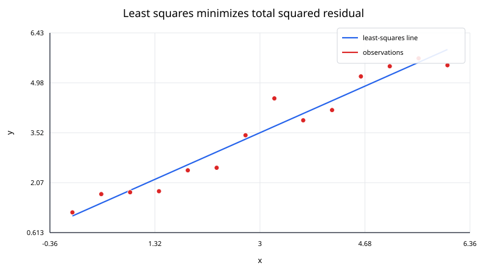
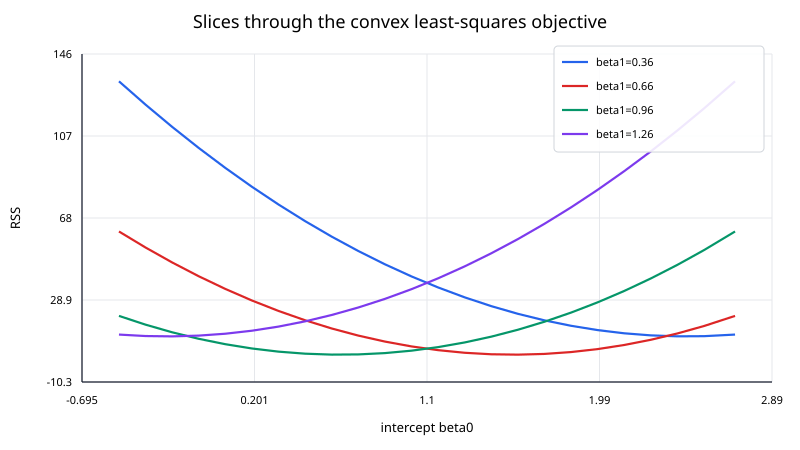

Least squares fits a model to data by minimizing the sum of squared residuals.
For a linear model
$$ \mathbf y\approx X\boldsymbol{\beta}, $$
the residual vector is
$$ \mathbf r = \mathbf y - X\boldsymbol{\beta}. $$
Ordinary least squares chooses coefficients that minimize
$$ \mathrm{RSS}(\boldsymbol{\beta}) = \|\mathbf y - X\boldsymbol{\beta}\|_2^2 = \sum_{i=1}^{N}r_i^2. $$
Equivalently,
$$ \hat{\boldsymbol{\beta}} = \underset{\boldsymbol{\beta}}{\mathrm{arg\,min}} \; \mathrm{RSS}(\boldsymbol{\beta}). $$
Unlike interpolation, least squares does not generally require the fitted model to pass through every data point.

Suppose a straight line is modeled as
$$ y\approx\beta_0 + \beta_1x. $$
For measurements $(x_i,y_i)$, the design matrix is
$$ X = \begin{bmatrix} 1 & x_1\\ 1 & x_2\\ \vdots & \vdots\\ 1 & x_N \end{bmatrix}, $$
the coefficient vector is
$$ \boldsymbol{\beta} = \begin{bmatrix} \beta_0\\ \beta_1 \end{bmatrix}, $$
and the observed values are
$$ \mathbf y = \begin{bmatrix} y_1\\ y_2\\ \vdots\\ y_N \end{bmatrix}. $$
The same framework handles polynomial regression and any model that is linear in its unknown coefficients.
Expand the objective:
$$ \begin{aligned} \mathrm{RSS}(\boldsymbol{\beta}) = (\mathbf y - X\boldsymbol{\beta})^\top (\mathbf y - X\boldsymbol{\beta}) \\ = \mathbf y^\top\mathbf y - 2\boldsymbol{\beta}^\top X^\top\mathbf y + \boldsymbol{\beta}^\top X^\top X\boldsymbol{\beta}. \end{aligned} $$
Differentiate with respect to $\boldsymbol{\beta}$:
$$ \nabla \mathrm{RSS} = -2X^\top\mathbf y + 2X^\top X\boldsymbol{\beta}. $$
At a minimizer,
$$ \nabla\mathrm{RSS} = 0, $$
which gives the normal equations
$$ X^\top X\hat{\boldsymbol{\beta}} = X^\top\mathbf y. $$
If the columns of $X$ are linearly independent, $X^\top X$ is positive definite and the solution is unique.
The fitted vector
$$ \hat{\mathbf y} = X\hat{\boldsymbol{\beta}} $$
belongs to the column space of $X$.
The normal equations can be rewritten as
$$ X^\top (\mathbf y - X\hat{\boldsymbol{\beta}}) = 0 $$
Therefore,
$$ X^\top\mathbf r = 0. $$
The residual vector is orthogonal to every column of $X$. Geometrically, the least-squares fit is the orthogonal projection of $\mathbf y$ onto the column space of the design matrix.
This interpretation is more general than the familiar picture of a best-fit line.
Fit a line to
$$ (0,1), \qquad (1,2), \qquad (2,2), \qquad (3,4). $$
The model is
$$ y\approx\beta_0 + \beta_1x. $$
The design matrix and response vector are
$$ X = \begin{bmatrix} 1&0\\ 1&1\\ 1&2\\ 1&3 \end{bmatrix}, \qquad \mathbf y = \begin{bmatrix} 1\\2\\2\\4 \end{bmatrix}. $$
The normal equations are
$$ \begin{bmatrix} 4&6\\ 6&14 \end{bmatrix} \begin{bmatrix} \beta_0\\ \beta_1 \end{bmatrix} = \begin{bmatrix} 9\\18 \end{bmatrix}. $$
Solving gives
$$ \hat\beta_0 = 0.9, \qquad \hat\beta_1 = 0.9. $$
The fitted line is
$$ \boxed{\hat y=0.9+0.9x}. $$
The predictions are
$$ 0.9,\quad1.8,\quad2.7,\quad3.6, $$
and the residuals are
$$ 0.1,\quad0.2,\quad - 0.7,\quad0.4. $$
Their sum is zero because the model includes an intercept, and they are orthogonal to the predictor column as required by the normal equations.
For a linear least-squares problem,
$$ \mathrm{RSS}(\boldsymbol{\beta}) $$
is a quadratic function of the coefficients.

When $X$ has full column rank, the quadratic bowl has one unique minimum. If the columns of $X$ are linearly dependent, there are multiple coefficient vectors that produce the same fitted values unless an additional criterion is imposed.
The normal equations are important theoretically, but explicitly forming
$$ X^\top X $$
can worsen numerical conditioning.
In the 2-norm,
$$ \kappa_2(X^\top X) = \kappa_2(X)^2 $$
when $X$ has full column rank.
So a moderately ill-conditioned design matrix can become much harder to solve accurately after squaring the condition number.
For numerical work, prefer:
Normal equations can still be acceptable for small, well-conditioned educational examples.
If
$$ X = QR, $$
where $Q$ has orthonormal columns and $R$ is upper triangular, then
$$ \| X\boldsymbol{\beta} - \mathbf y\|_2 = \| R\boldsymbol{\beta} - Q^\top\mathbf y\|_2 $$
up to a residual component orthogonal to the column space.
The coefficient vector can be obtained by solving
$$ R\hat{\boldsymbol{\beta}} = Q^\top\mathbf y. $$
This avoids explicitly forming $X^\top X$.
If the columns of $X$ are linearly dependent, the coefficient vector is not uniquely determined.
The SVD
$$ X = U\Sigma V^\top $$
makes the numerical rank explicit through the singular values in $\Sigma$.
A common choice is the minimum-norm least-squares solution computed with the pseudoinverse:
$$ \hat{\boldsymbol{\beta}} = X^ + \mathbf y. $$
In practice, library routines use a tolerance to decide which singular values are treated as effectively zero.
Polynomial and multivariable design matrices can be poorly scaled.
Useful preprocessing includes:
Scaling changes the numerical representation, not the underlying fitted relationship, provided coefficients are interpreted or transformed appropriately afterward.
If observations have different known reliabilities, use weights
$$ w_i>0 $$
and minimize
$$ \sum_{i=1}^{N} w_i r_i^2. $$
With diagonal matrix
$$ W = \mathrm{diag}(w_1,\ldots,w_N), $$
the objective becomes
$$ (\mathbf y - X\boldsymbol{\beta})^\top W (\mathbf y - X\boldsymbol{\beta}). $$
The corresponding normal equations are
$$ X^\top W X\hat{\boldsymbol{\beta}} = X^\top W\mathbf y. $$
Squaring residuals gives large errors disproportionately high influence. A single extreme outlier can move an ordinary least-squares fit substantially.
Robust regression methods replace the squared loss or iteratively reweight observations so that extreme residuals have less influence.
For an important least-squares model: